☰ Menu
×
Home
Sobre
Conteúdo
Contato
Pecados
Pecado do Orgulho do Leão
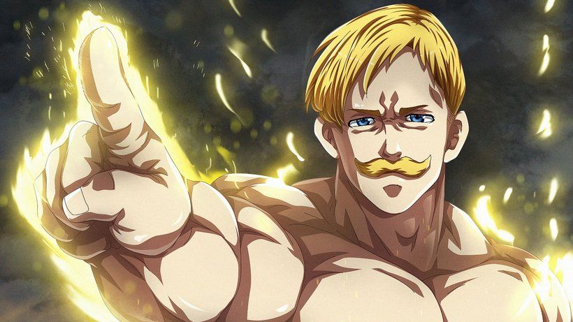
Escanor o leao do orgulho, de Nanatsu no Taizai
Como a maioria dos fãs da série já sabem, a obra Nanatsu no Taizai tem bastante inspirações e referências de “A lenda do Rei Arthur”, e com Escanor não foi diferente. No Ciclo Arturiano existe um personagem com esse nome, ele é um cavaleiro surpreendentemente forte e orgulhoso, ficando conhecido e famoso por lutar várias vezes contra Gawain, um dos Cavaleiros da Távola Redonda – de quem se tornou amigo.
Primeira aparição
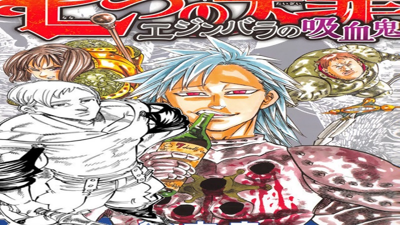
A primeira aparição de Escanor aconteceu em “Vampires of Edinburgh” (Vampiros de Edimburgo), uma série especial de mangás de Nanatsu no Taizai com 3 capítulos lançados em 2015. A história de Vampiros de Edimburgo se passa antes da principal (anime/mangá), e mostra um pouco sobre os poderes e a personalidade do personagem.
Os outros 6 membros dos Sete Pecados Capitais são:
1. Meliodas, o pecado da Ira do Dragão e líder do grupo
2. Diane, o pecado da Serpente da Inveja
3. King, o pecado do Urso da Preguiça
4. Merlin, o pecado do Javali da Gula
5. Gowther, o pecado da Cabra da Luxúria
6. Ban, o pecado da raposa da Ganancia
Origem e exilamento
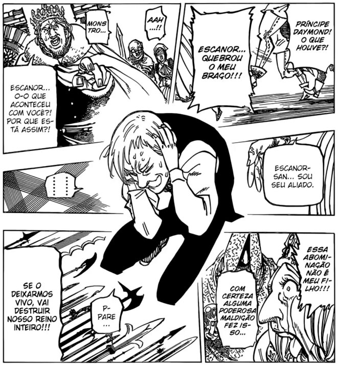
Escanor é o filho mais novo de um rei, pertencendo à família do Reino de Castellio. Quando criança, sofria bullying de seu irmão mais velho, Daymond – príncipe de Castellio -, que tinha ciúmes do tratamento e da atenção que Escanor vinha recebendo de seus pais. Certa vez, Daymond estava batendo nele e o chamando de fraco, até que ele decidiu revidar, e, sem querer – ao despertar seu desconhecido poder -, acabou quebrando o braço de Daymond. Depois desse acontecimento, os pais de Escanor o negaram, considerando-o um monstro. Eles até chegaram a pedir que seus cavaleiros o matassem, porém isso não foi possível, pois o personagem conseguiu fugir do reino com a ajuda de uma mulher chamada Rosa.
Se juntando aos pecados
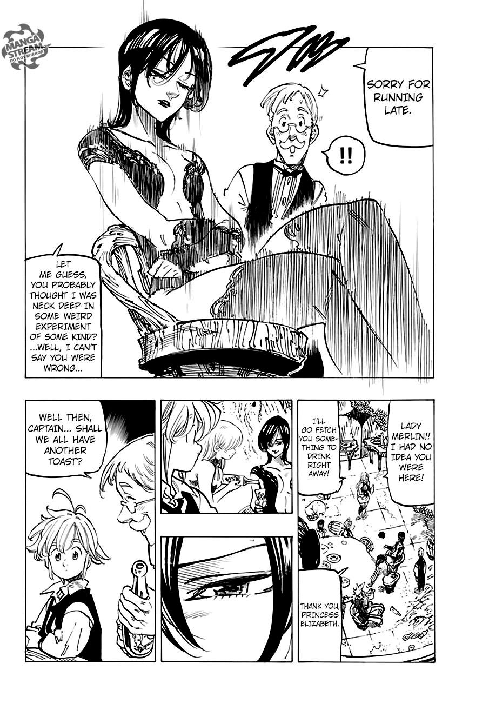
Após fugir do reino, Escanor começou a entender melhor sobre o seu poder, e então vagou pelo mundo derrotando monstros e salvando pessoas. Mas mesmo realizando boas ações, ainda era tratado com desprezo. Quando conheceu Merlin e Meliodas – que o aceitaram como ele é -, acabou se juntando aos 7 Pecados Capitais, representando o Pecado do Orgulho do Leão.
único dos 7 Pecados Capitais que não apareceu na primeira temporada
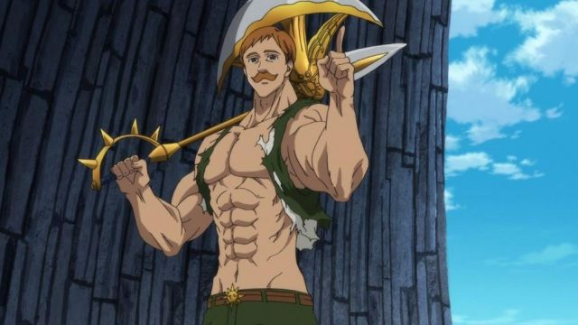
O personagem foi o único dos 7 Pecados Capitais que não apareceu na primeira temporada do anime, sendo visto apenas na placa de procurado, onde tinha um visual totalmente diferente do verdadeiro, aparentando ser mais velho do que é.
Dupla personalidade
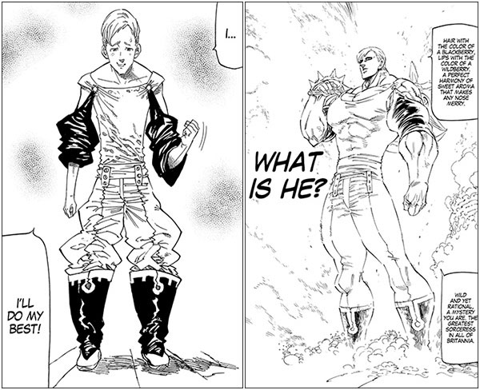
Escanor possui dupla personalidade, enquanto durante o dia (conforme o sol vai nascendo) é muito orgulhoso e confiante – assim como o pecado que representa -, um daqueles personagens badass; durante a noite (conforme vai escurecendo), sua personalidade sofre uma grande mudança, e ele se torna uma pessoa dócil e tímida, além de extremamente sem confiança.
Mudanças físicas
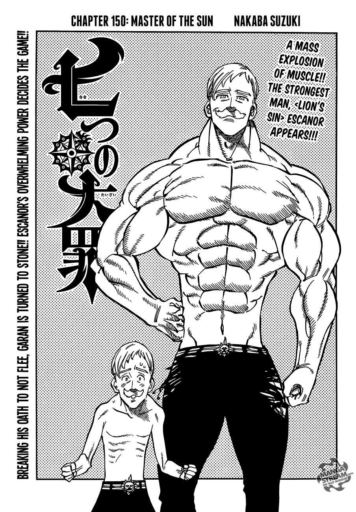
Não é só a personalidade de Escanor que sofre grandes mudanças, sua forma física também. Enquanto durante a noite ele é um homem pequeno – com pouco mais de 1 metro e 60cm -, franzino e magro – com seus 40 e poucos kg -; durante o dia começa a crescer, podendo chegar a mais de 3 metros de altura e mais de 350kg de puro músculo. Ele tem uma tatuagem de leão – que é o seu símbolo da besta. Durante o dia, ela se torna bem pequena, não ocupando quase nada de seu corpo, já à noite, ela ocupa praticamente toda suas costas.
É extremamente poderoso
O pecado do orgulho é extremamente forte, sendo descrito por alguns de seus próprios companheiros como o mais poderoso do grupo quando está em sua “forma orgulhosa”, principalmente durante o seu auge, que acontece ao meio dia em ponto, e durante 1 minuto o poder de Escanor é descrito como ‘impossível’ de se medir.
E extremamente fraco
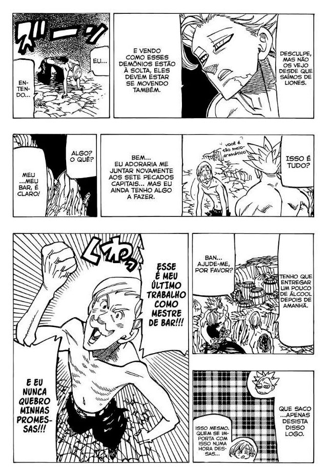
Se durante o dia Escanor fica poderosíssimo, durante a noite se torna extremamente fraco e frágil, principalmente à meia-noite.
Demonstra ser apaixonado por Merlin
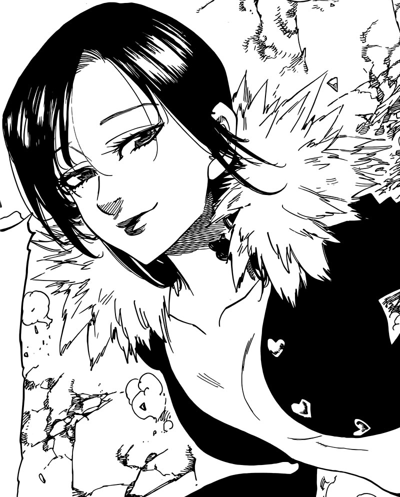
Desde sua primeira aparição Escanor demonstrou ter sentimentos por Merlin – Pecado do Javali da Gula -, mesmo em sua forma orgulhosa. Ele escreve poemas sobre ela e sempre tenta impressioná-la. Além disso, também a homenageou no nome de seu bar, que se chama: “My Sweet Gula” (Minha Doce Gula), uma clara referência à personagem.
Tesouro Sagrado
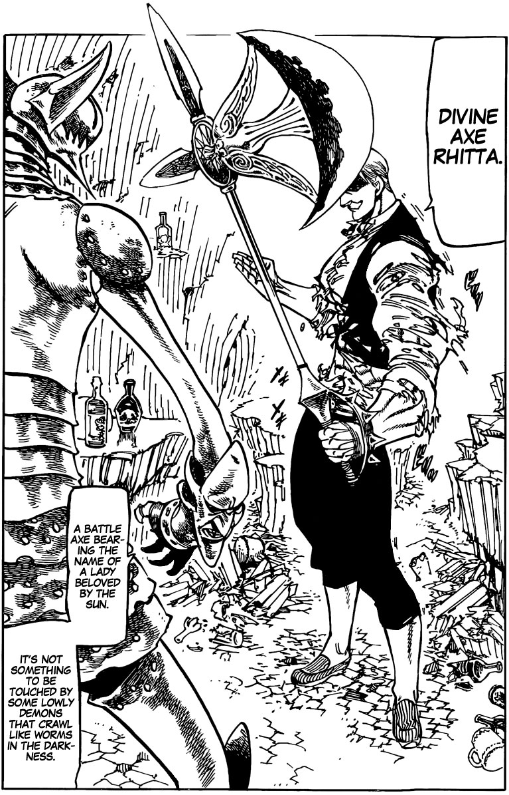
Todos os Pecados Capitais possuem Tesouros Sagrados, armas extremamente poderosas que “aumentam” os poderes dos membros do grupo, permitindo que usem todo o seu potencial. A arma de Escanor é “Rhitta”, um machado sagrado gigante e muito pesado.
Poderes e Habilidades
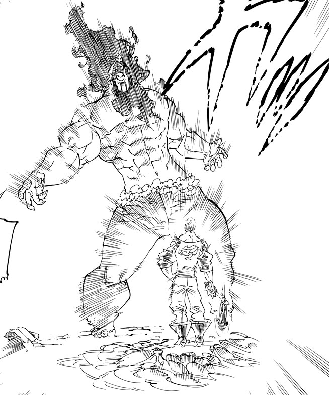
O poder do personagem se chama Sunshine e, até o momento, ainda é um mistério, não se sabe se é um dom ou uma maldição, só se sabe que o Sunshine aumenta e diminui a força de Escanor conforme o dia vai passando. Quanto as suas habilidades, em sua forma orgulhosa ele se mostrou extremamente forte, resistente e rápido.
Derrotou grandes inimigos
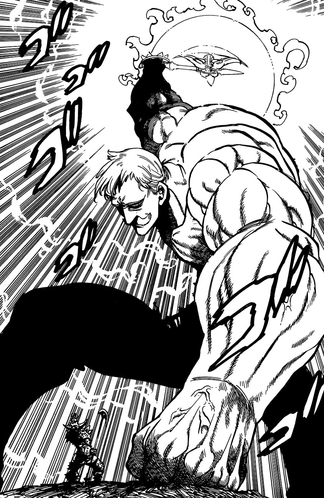
Quem acompanha o mangá pode ver as incríveis batalhas protagonizadas por Escanor, que derrotou diversos inimigos formidáveis. No mangá Vampiros de Edinburgo, ele derrotou facilmente o rei dos vampiros, Izraf. Já no arco Ravens, enfrentou e venceu nada mais nada menos do que alguns dos Dez Mandamentos: Galand, Merascylla, Estarossa e Zeldris. Além disso, ainda foi capaz de vencer Meliodas – líder dos 7 Pecados Capitais, por quem nutre grande respeito.
Voltar ao topo